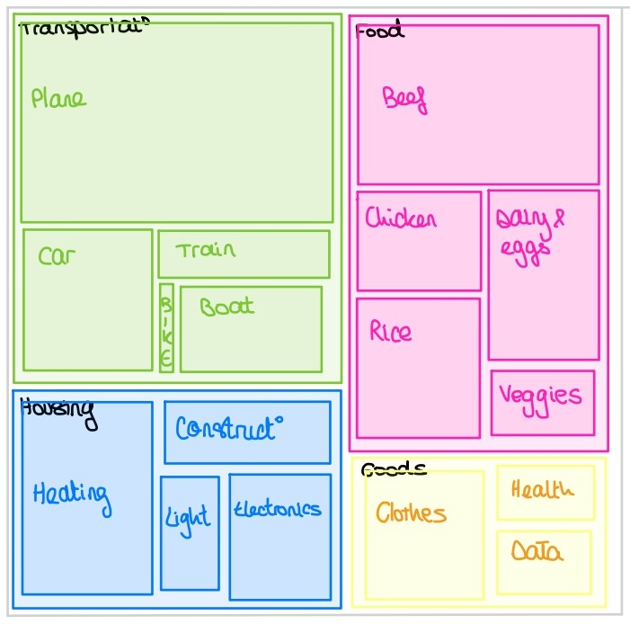

Worldwide textile waste in tons since you opened this page: 0
Impact Of The Textile Industry
Repartition of the carbon footprint of a swiss person
First of all, here is the average repartition of a swiss person carbon footprint :

We can see that Clothing is not that small, and more important, a part that we have a lot of influence of our footprint.
In the textile industry, not only the carbon emissions matter. Actually, the 4 main (?) are water use, carbon emissions, energy consumption and land use. And the 4 of them are in constant increase for the past century:
0
‐
100
Let's have a closer look at each consumptions:
Which fabric is the best?
We can compare the water use, carbon emissions and land use for different fabrics:
So each fabric has its pros and cons. Natural ones consume in general more water and land use, but emit less carbon dioxide and consume less energy.